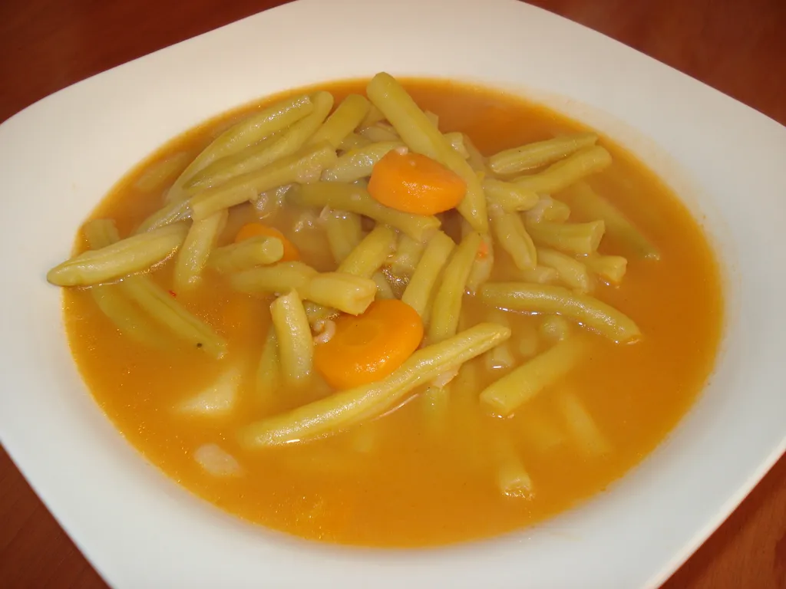

Mahune

O jelu
Mahune ili kolokvijalno maune, jelo je srednje žalosti, no mora se nekad jest.
Sastojci
- Voda
- Maune
- frtalj mrkve
- premalo soli
- i to je to
Procedura
- na šporetu se zakuva 3 litre vode
- stavi se unutra sva 2 i pol sastojka
- kuva se oko sat vremena, sve dok ne bude gotovo
- nekak se pojede jednom, ostalo se sutra baci
Home